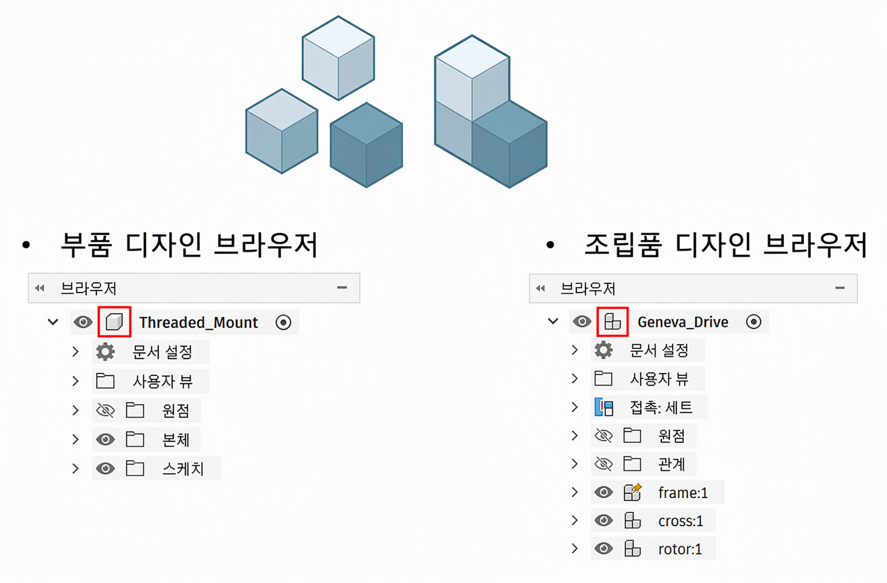

[19차시] 조립품 모델링 실습
조립품 모델링
1. 조립품이란?
- 조립품은 Fusion에서 단일 디자인으로 작동하는 구성요소의 집합임.


- 조립품의 관계는 서로 다른 유형의 관계를 작성하여 둘 이상의 구성요소를 조립할 수 있음.
구성요소 간에 새 관계를 작성하면 해당 관계는 브라우저 관계 폴더에 나타남.

- 구성요소 구속: 형상을 구속하여 둘 이상의 구성요소를 서로 상대적으로 배치하고, 조립품의 자유도를 줄이고, 관련 구성요소 간에 구속조건 관계를 작성함.
- 접합: 서로 관련하여 아직 배치되지 않은 구성요소 간에 접합을 작성함.
- 현재 위치에서 접합: 이미 서로 관련하여 배치된 구성요소 간에 접합을 작성함.
- 접합 원점: 나중에 조립품 관계를 정의하는 데 사용할 수 있는 좌표계를 작성하고 구성요소에 배치함.
- 강체 그룹: 조립품에서 함께 이동하도록 구성요소를 함께 잠금.
- 접합 구동: 회전 각도 및 거리와 같은 접합 동작 입력을 수정하여 자유도를 제어함.
- 동작 링크: 두 접합의 동작을 함께 연결.
2. 조립품 구속조건
- 구속조건은 두 개 이상의 구성요소를 서로 상대적인 위치에 배치하기 위해 형상을 구속하는 조립품 관계임.
| 접합 유형 | 허용되는 움직임 (자유도) | 대표 활용 예시 |
|---|---|---|
| 강체 (Rigid) | 이동·회전 모두 고정 (0 DOF) | 볼트로 단단히 고정된 프레임·브래킷 |
| 회전 (Revolute) | 1개 축 중심 회전 (1 DOF) | 경첩(힌지), 바퀴 축, 레버 |
| 슬라이더 (Slider) | 1개 축 방향 직선 왕복 이동 (1 DOF) | 서랍 레일, 직선 가이드 |
| 원통형 (Cylindrical) | 같은 축 기준 회전 + 직선 이동 (2 DOF) | 피스톤 로드, 샤프트 |
| 핀-슬롯 (Pin-Slot) | 1축 회전 + 수직 방향 직선 이동 (2 DOF) | 캠·슬롯 링크 기구 |
| 평면형 (Planar) | 평면 위 2축 이동 + 법선 축 회전 (3 DOF) | 바닥면 위를 미끄러지는 블록 |
| 볼 (Ball) | 3축 자유 회전 (3 DOF) | 볼 조인트, 카메라 짐벌 |
✅ 19차시 조립품 실습 체크리스트
- 조립할 부품들이 단순 '본체'가 아닌 구성요소(Component) 로 분리되어 있는가?
- 기준이 되는 베이스 구성요소에 고정(Ground, 📌) 을 적용했는가?
- 부품의 실제 움직임에 맞는 구속조건 또는 접합 유형을 선택했는가?
- 접합 구동(Drive Joints) 또는 마우스 드래그로 움직임과 부품 간 간섭 여부를 확인했는가?
- 구속조건을 사용하여 사용 가능한 DOF(자유도)를 잠가 구성요소 관계의 복잡성을 줄일 수 있음.

3. 조립품 구성요소 구속
- 구성요소 구속을 사용하여 둘 이상의 구성요소를 서로 상대적으로 배치할 수 있음.

4. 조립품 접합
- 접합은 조립품에서 두 구성요소 사이의 상대적 위치 및 동작을 정의하는 기계적 조립품
관계임.